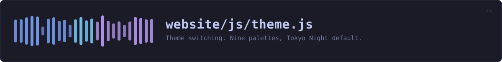

website/js/theme.js
the website's source · 104 lines · read it on GitHub
WHAT IT DOES
Theme switching. Nine palettes, Tokyo Night default.
The choice is kept in localStorage, which never leaves the browser. No cookie, so nothing is attached to a request and there is nothing to consent to -- a preference the server never sees is not tracking.
IN PLAIN WORDS
This is the colour-scheme menu in the corner of the page. Pick a theme and every page on this site changes to it, and stays that way next time you come back.
Your choice is kept in your own browser. It is not a cookie, so it is never sent anywhere: this site has no server that could receive it and nothing that could match it to you.
WHAT CALLS WHAT
Read out of the source: an edge means the callee’s name appears, called, inside the caller’s body. A syntactic reading, not a resolved one.
| Function | Line |
|---|---|
valid | 41 |
stored | 45 |
apply | 55 |
build | 60 |